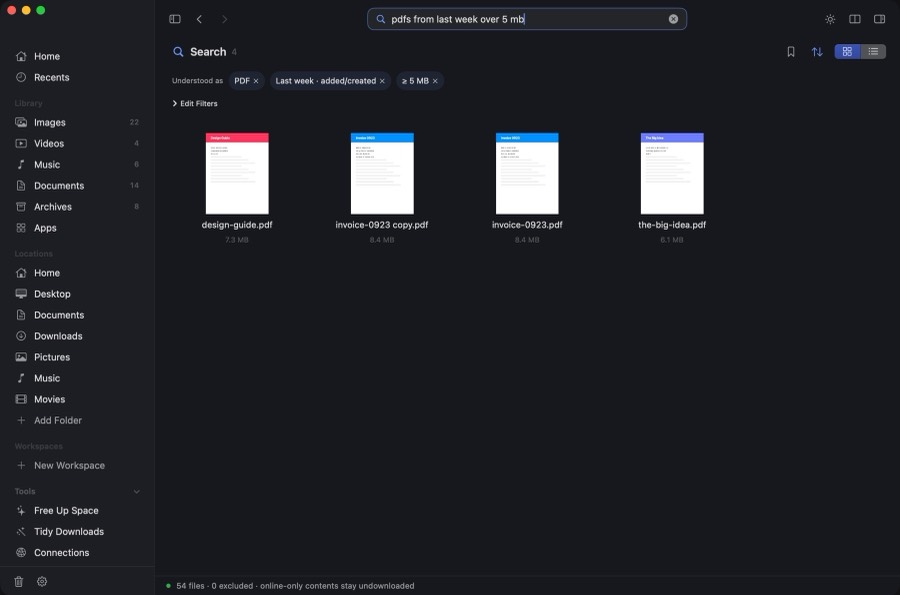
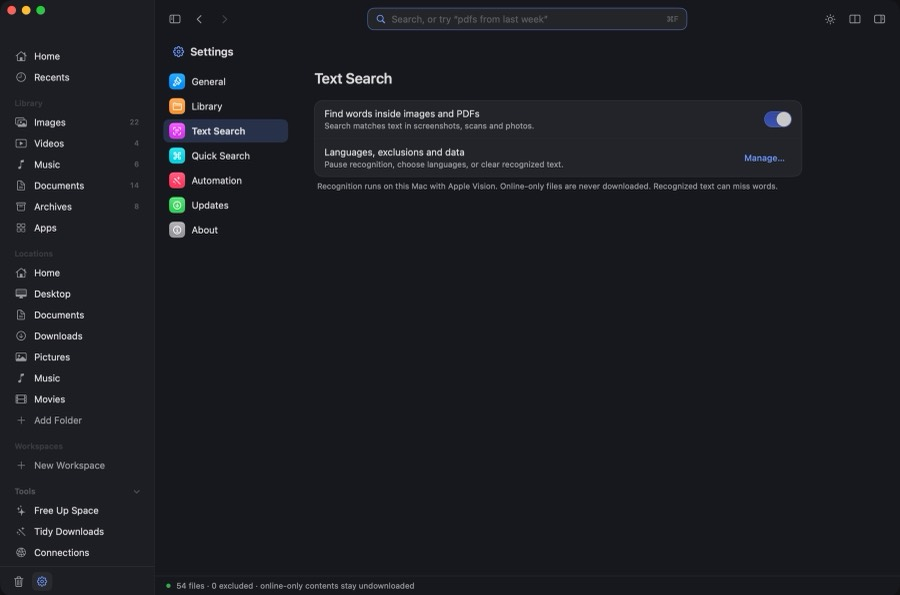

Find files on your Mac by describing them
Updated

Why a file can be hard to find on a Mac
Most lost files aren’t gone. They’re saved with a name you don’t remember (IMG_4021.HEIC, Scan 3.pdf, invoice (2).pdf) in a folder you didn’t choose. What you usually remember is something else: roughly when you got it, what kind of file it was, how big it was, or where it came from.
Spotlight is quick when you remember part of a name or a phrase inside a document. Finder can combine type, date and size too, but you build that search by choosing each criterion from menus in a Find window. MacEx starts from the sentence you would say out loud and shows you exactly how it read it. If Spotlight misses a file you know exists, check Search Privacy and rebuild the index first.
How MacEx reads a plain-language search
MacEx looks for four kinds of detail in what you type and turns each into a filter:
- Type: words like pdfs, screenshots, videos or zips become a file type or extension filter.
- Date: last week, in august or older than 6 months become a date range. “Last week” means the previous calendar week in your time zone.
- Size: over 5 mb or bigger than 1gb become a size limit, in decimal units (1 MB is 1,000,000 bytes).
- Source: from gmail or from my iphone use the download website or camera information saved with the file.
Any words left over are matched against file names and tags. The chips under Understood as are the whole search, so nothing is guessed behind your back. Click × on a chip to drop it, or Edit Filters to change the type, size, source or date yourself. Click the bookmark to save the search in the sidebar; dates such as “last week” are recalculated each time you open it.
Searches you can type
- pdfs from last week over 5 mb
- videos from my iphone in august
- screenshots with wifi password
- zips bigger than 1gb older than 6 months
- pdfs from gmail
- large videos in Downloads
Find words inside screenshots, scans and PDFs
Screenshots of a Wi-Fi password, a scanned receipt or a photographed whiteboard have no useful file name. Turn on Settings › Text Search and MacEx reads the text in your images and PDFs with Apple’s on-device Vision framework, so a search like screenshots with wifi password can match the words in the picture.

Reading a large library takes a while, and MacEx slows down on battery and in Low Power Mode. You can pause it, pick languages, exclude folders, or clear the recognized text from the same page.
Find a download by where it came from
Browsers save the address a file was downloaded from. MacEx reads it, keeps only the website name, and lets you search with it: pdfs from gmail, zips from github. Press ⇧⌘J to see every download grouped by website. Full links and your browsing history are not stored, and no website is contacted. To tidy the folder itself, see how to clean up your Downloads folder.
Search from any app
Press ⇧⌘Space anywhere and MacEx comes forward with the search field ready. You can change the shortcut in Settings › Quick Search. MacEx also adds Find Files, Search in MacEx and Get Latest Download actions to the Shortcuts app, and a link such as macex://search?query=pdfs from last week opens a search directly.
What MacEx search can’t do
- It doesn’t understand pictures. “Photos of my dog” only matches names, tags and recognized text. MacEx does not label what is in a photo.
- Filters need information in the file. A file with no camera, source or date information is left out when you filter by that detail.
- It searches your library, not the whole disk. MacEx covers your standard personal folders, installed apps and up to eight folders you add. Hidden files and the insides of app bundles are left out on purpose, and the library keeps up to 20,000 files.
- Online-only iCloud files stay online. They are listed, but MacEx never downloads them to read their text.
- Recognized text can miss words, especially in blurry images.
For a search across every file on the disk, including system folders, Spotlight and the mdfind command in Terminal still reach further.
Is the search private?
Yes. Search and text recognition run on your Mac. There is no account and no cloud AI, and your files and searches are not uploaded. Read more in Privacy and permissions.
Related
MacEx runs on macOS 14 or later, Apple silicon and Intel. One-time purchase, no account, no subscription.